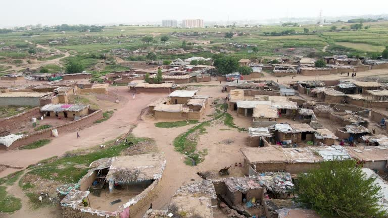

التقرير السنوي 2024
ملخص البرامج والنتائج والدروس المستفادة.
قريباًنوثق أثرنا، وننشر تقاريرنا، ونروي قصص المجتمعات بكرامة وموافقة واحترام كامل لمعايير الحماية.
في القرى البعيدة حيث تقلّ الخدمات، يبدأ عمل عطاء. نصل إلى الأسر حيث هي، ونبني معها حلولاً تدوم. كل مجتمع شريك، وكل خطوة بكرامة واحترام.
نعمل في مجتمعات تعيش ظروفاً صعبة، لنحمي الأسر ونلبّي احتياجاتها الأساسية. القرب من الناس يعني استجابة أسرع وأثراً أوضح. وهكذا نبقى مسؤولين عن كل نتيجة.

منظر من الأعلىمن الأعلى تبدو الأحياء مزدحمة بالبيوت البسيطة، وخلف كل سقف أسرة تحتاج إلى الأمان والخدمات. نرسم خريطة هذه التجمعات لنعرف احتياجاتها بدقة. وبالبيانات يصل الدعم إلى من يستحقه.
لا ننشر صور الأطفال دون تفويض وموافقة، ولا نستخدم صوراً تظهر الضعف أو تكشف الموقع أو البيانات الشخصية. كل قصة تُروى بشراكة واحترام.